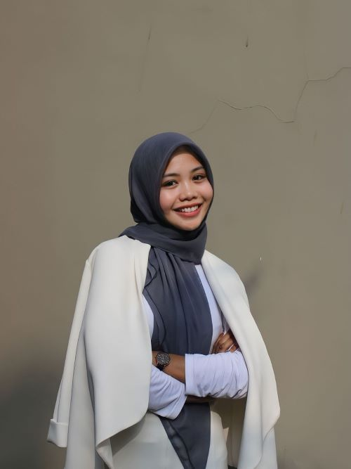
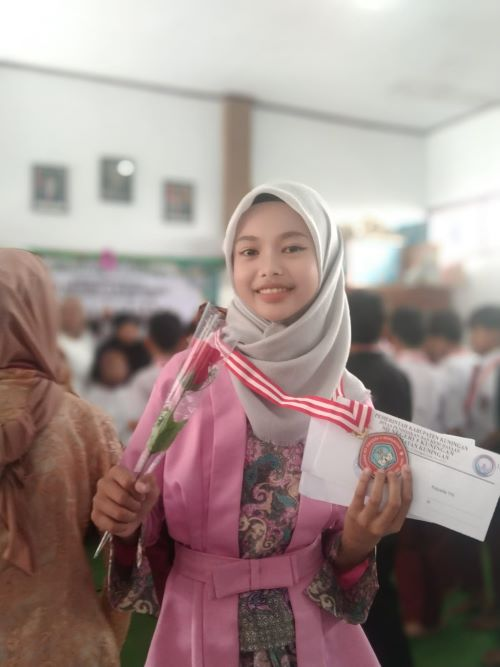

| Kode Anggota | NIM | Nama Lengkap | Prodi | Kelas | Jenis Kelamin | No Telepon | Foto | Alamat |
|---|---|---|---|---|---|---|---|---|
| AG001 | 20230810054 | Rahma Izmi Fatihah | Teknik Informatika | TI-2023-03 | Perempuan | 0895616838442 |  | Jl.Delima 73 Perum Korpri Cigintung, Kuningan |
| AG002 | 20230810065 | Syalwa Dwi Kirana | Sistem Informasi | SI-2024-01 | Perempuan | 081987654321 |  | Jl.Pandawara Cijoho, Kuningan |
| AG003 | 20230810564 | Aqilla Triana Fadhillah | Sistem Informasi | SI-2022-01 | Perempuan | 08954654326 | Gang Ibu Supomo Pasapen, Kuningan |